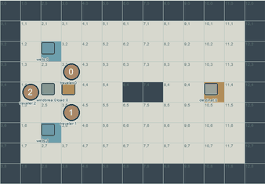
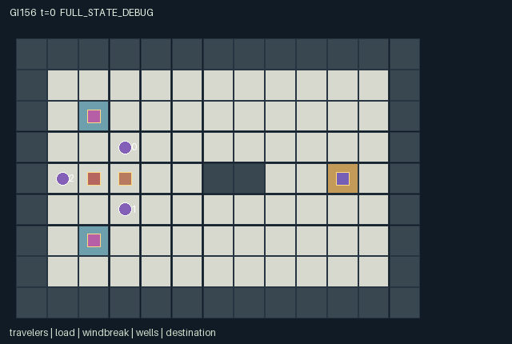

GI156 / SPATIAL
背风车队
任意两名旅人可抓住大件两侧同步搬运，风障投下的背风影改变路线选择。
Original saved demonstration
Recorded native state, often authored scripts or interventions; information scope and failures are preserved in the original provenance. This is a saved demonstration, not live browser play.

Release verification episode
Untrained uniform legal actions. Actual JAX state sampled along the full original episode; full-state debug camera. No human performance or learning claim.

Run this game
crucibles play --game 156
Start Python locally, then open the address printed by the terminal. Installation, multiplayer, takeover and keyboard controls →
Objective, rewards & ending
Exact task contract
{
"objective": "Deliver one heavy load across a ridge using synchronized hauling, movable wind shelter, finite water and interchangeable transport/support roles.",
"natural_termination": "The load center reaching (10,4) terminates naturally. Energy or water exhaustion alone does not fabricate a failure: waiting, shade and partner support remain possible; unresolved play truncates at 128.",
"interaction": "A traveler repositioning the windbreak changes the current-step movement costs and resting recovery of others. A load needs two correctly positioned matching actions, while physical bodies and selfish shelter occupation can block travel or shade placement.",
"observation_access": "Fully observable terrain, positions, resources, grip states, wind, shadow flags, wells and event counters. The renderer displays the same fixed state variables; own id distinguishes policy roles."
}Declared per-step reward bounds: -0.01 to 1. Observability: fully_observable.
Rules
- Any two travelers can grip the opposite north/south load handles; there are no permanently assigned specialist roles.
- A matching directional command translates the whole load-and-carrier body only if all target cells are free and both carriers can pay.
- The windbreak casts a three-cell downwind shadow with lateral width one cell on each side.
- Unattached movement costs one energy; hauling costs two. Exposure adds two, and moving against wind adds one.
- Windbreak shifts happen before cost calculation and consume two energy from one adjacent unattached traveler.
- Resting in shade restores two energy. Drinking spends one water to restore up to four energy.
- Water gifts and well draws transfer real finite units. Wells do not refill.
- Wind rotates east, south, west and north in eight-tick blocks. The ridge permits alternative upper and lower routes.
- Arrival ends naturally; otherwise the horizon is 128.
Original mechanism document (historical status wording retained)
# Leeward Caravan **AUTHOR_ONLY_NOT_EXECUTED.** Initial parentless train proposal 156, window 0, source attempt 0. No candidate import, JAX evaluation, reset/step call, numerical R0, trajectory replay, rendered animation or learning run occurred during authoring. AST/syntax and declarative data-schema checks do not establish runtime correctness or game outcomes. Native boundary: A=3, O=159, U=15, H=128. Observations are float32 `[A,O]`, actions int32 `[A]`, masks bool `[A,U]`, rewards float32 `[A]`, and every state leaf is fixed-shape int32 or bool. Source SHA-256: `54c4ac626a7aeaf416e5b2d2ae88649299ecaa06d9b66f37102c8d076a368c75`. ## Game and cross-agent mechanisms Deliver one heavy load across a ridge using synchronized hauling, movable wind shelter, finite water and interchangeable transport/support roles. The shared load has north and south handles. Any pair can attach, release, rest, drink or swap duties with the remaining traveler. Hauling translates both carriers and the load as one rigid body; matching commands alone are insufficient if the handle geometry, energy or whole-body route is wrong. The central ridge blocks a straight traverse, giving upper and lower routes with different opportunities to obtain water or position shelter. The movable windbreak occupies a real blocking cell. Its shadow extends one to three cells along the current wind vector and one cell to either side. A successful shift happens before movement cost and resting recovery, so another traveler's same-step action can become cheaper because of that shift. Only one shift succeeds per tick under rotating actor priority, and its target cannot overlap a traveler or load. A traveler occupying a tempting shaded spot may therefore prevent the support traveler from repositioning the shelter. Hauling costs two base energy and walking one. Outside shade, movement adds the wind-strength surcharge of two; moving against wind adds one more. A move attempt that cannot pay or cannot fit does not spend movement energy. Rest restores two only inside the updated shadow, while drinking always consumes one water and restores at most four. Waiting for a wind phase, setting up a sheltered relay, spending water to rush an exposed segment, or switching the tired carrier into a support role are prospective strategies with partner-dependent effects. The intended exact water identity is `sum(water) + sum(well_stock) + water_used = 14`: six units start in bags and eight in wells. Giving and drawing transfer units; drinking consumes them into the accounting counter. Energy remains in 0..12 and bags in 0..3. Wind changes at eight-tick boundaries after the step; costs use the wind shown at the action's input state. Post-step shadow flags describe the next state's actual wind and shelter position. No exhaustion state is declared impossible: another traveler may bring shade or water, and an eventual wind rotation may help. Only arrival is natural completion; the horizon handles unresolved situations. Reset is deterministic and ignores its key. Future variants could vary wind phases, shadow geometry, ridge layout or handle orientation; none is claimed as evaluated. ## Actions, contention and temporal order - `0`: Rest; gain two energy only inside current windbreak shadow. - `1`: Move north or request synchronized northward haul. - `2`: Move east or request synchronized eastward haul. - `3`: Move south or request synchronized southward haul. - `4`: Move west or request synchronized westward haul. - `5`: Attach to a north/south load handle, or release. - `6`: Shift adjacent windbreak north, spending two energy. - `7`: Shift adjacent windbreak east, spending two energy. - `8`: Shift adjacent windbreak south, spending two energy. - `9`: Shift adjacent windbreak west, spending two energy. - `10`: Drink one water to restore up to four energy. - `11`: Give one water to adjacent agent 0. - `12`: Give one water to adjacent agent 1. - `13`: Give one water to adjacent agent 2. - `14`: Fill one water from nearest adjacent finite well. Out-of-range or masked actions deterministically become action 0. A legal attempt can be unfulfilled when its resolution-phase spatial, resource or joint-action prerequisites are absent. Ordinary movement rejects another agent's start-of-tick cell, so swaps are blocked. Empty-cell contention uses the smallest `(agent_id - t) mod A`. Rigid towing/hauling has its own explicit whole-body translation phase; its participating body can use its own vacated cells, and free agents remain blocked by the old and new body. All priorities and rule-specific ordering are literal in the source evidence below. ## Native observations and truthful rendering Fully observable terrain, positions, resources, grip states, wind, shadow flags, wells and event counters. The renderer displays the same fixed state variables; own id distinguishes policy roles. - Columns `0:1` (self): Own traveler id. - Columns `1:7` (public): Clock,joint done,total water drunk,haul event,windbreak-move event,load delivered. - Columns `7:25` (public): Three traveler records: x,y,energy,water,grip,sheltered. - Columns `25:29` (public): Load x,y,number of grips,shadow flag. - Columns `29:34` (public): Windbreak x,y,current wind dx,dy,exposure surcharge. - Columns `34:40` (public): Two well records: x,y,remaining water. - Columns `40:42` (public): Destination x,y. - Columns `42:159` (public): Static 9 by 13 public map in yx row-major order. Positions are actual integer `[x,y]` coordinates with downward y; maps are indexed `[y,x]`. `scene.json` binds exact state paths for map, entities, visibility, attributes and events. Public event information is included in the flat observations. A per-step event is not relabeled as a cumulative counter or persistent level. Hidden entity fields are masked, and a full-state debug view must be labeled separately from role-visible replay. Scene descriptors contain no fabricated trajectory or executable rendering content. A real animation still requires an actual trusted replay. ## Termination, numerical bounds and intended invariants The load center reaching (10,4) terminates naturally. Energy or water exhaustion alone does not fabricate a failure: waiting, shade and partner support remain possible; unresolved play truncates at 128. Nonterminal calls advance the int32 clock exactly once. Natural completion or failure has priority over the horizon. An already terminal raw call preserves every state leaf, observation and clock, returns zero rewards and all dones true, and retains the original terminated/truncated causes. No raw auto-reset occurs. Observation bounds are -1..128 and reward bounds -0.01..1. These are data/game bounds, not scientific effectiveness gates. Source-specific conservation, geometry and resource properties above are declared invariants for independent execution checks, not numerically verified claims. The manifest lists every leaf and safe structural invariants. Signed integer categories and coordinates are explicitly int32; the external uint32 reset key is not duplicated as hidden mutable state. ## Literal source evidence - Spatial downwind shadow: `candidate.py:12` — `def shade(self, positions, shelter, wind):` - Deterministic weather phase: `candidate.py:18` — `def refresh(self, s):` - Water, ridge and initial handle layout: `candidate.py:27` — `def reset(self, key):` - Energy-based attempt masks: `candidate.py:44` — `def legal_actions(self, s):` - Other actors costs change after a shift: `candidate.py:64` — `# One physical windbreak shift per tick; it changes other actors costs immediately.` - Water conservation: `candidate.py:78` — `# Water transfers and drinking use real finite units, with no automatic replenishment.` - Same-step shade-dependent costs: `candidate.py:93` — `covered = self.shade(s["agent_pos"],s["shelter_pos"][0],state["wind_dir"][0])` - Interchangeable synchronized hauling: `candidate.py:97` — `# Any pair can haul, but must occupy opposite north/south handles and choose one direction.` - Whole-body collision and free movement: `candidate.py:113` — `# Unattached travelers cannot walk through the load, windbreak or another traveler's old cell.` - Natural arrival and raw terminal: `candidate.py:124` — `s["delivered"] = jnp.all(s["load_pos"][0] == s["goal_pos"][0])` - All policy-visible state: `candidate.py:135` — `def observe(self, s):` ## Unexecuted playthroughs and interventions `playthrough.json` supplies finite literal joint-action scripts and paired branches differing in exactly one role action at one decision. Every script and pair is `UNEXECUTED_AUTHOR_HYPOTHESIS`. Vector dimensions, integer action ranges and single-action differences were checked as data. Runtime legality, actual state changes, solvability, strategy quality and terminal success remain unverified. A future executor must retain failures or inconclusive traces rather than converting an intention into a success receipt. ## Reference use, interface handoff and provenance Only the supplied official snapshots were consulted. JaxMARL supplies the agent-keyed parallel API convention and `__all__`; the restricted kernel keeps a homogeneous array boundary for later trusted integration. Pgx supplies explicit legality/terminal/key API ideas, not any board-game rules. Craftax supplies a reference for spatial inventories and persistent game state. PureJaxRL is an algorithm implementation reference, not a new environment library; the supplied Craftax recurrent PPO baseline itself credits PureJaxRL. None of their environment, model, training or wrapper code was copied, imported or run. Frozen sources: [JaxMARL README](https://github.com/bold-lab-ai/JaxMARL/blob/main/README.md), [Pgx README](https://github.com/sotetsuk/pgx/blob/main/README.md), [Craftax README](https://github.com/MichaelTMatthews/Craftax/blob/main/README.md), [PureJaxRL README](https://github.com/luchris429/purejaxrl/blob/main/README.md), [Craftax recurrent PPO baseline](https://github.com/MichaelTMatthews/Craftax_Baselines/blob/main/ppo_rnn.py). Their exact snapshot hashes are recorded in `author_input_freeze.json`. A later trusted adapter may expose the fixed ids `agent_0` through `agent_2` as JaxMARL dictionaries, with `__all__` taken from `done_all` and unchanged observation/mask semantics. This author packet adds no learner or public adapter and does not modify the frozen experimental algorithm. Inactive-role no-op semantics, where relevant, are defined by the kernel rather than by renderer behavior. `author_input_freeze.json` binds all twenty frozen inputs and the separately authorized administrative erratum. The erratum resolves a copied reservation description and expressly permits reading this batch authorization; it changes no design, rule or outcome. No earlier candidate files, GI/learned/CURRENT results, training/evaluation feedback or final-test material were read for this batch. Only the four assigned new output directories were written. Window accounting remains parentless ordinals 154..157, 158 used/reserved of the existing 512 cap, and unchanged later windows. This packet establishes authored assets only; runtime quality, replay, animation, learnability, transfer and scientific acceptance remain unestablished.
Commands
Roles & abilities
agent_0 Interchangeable traveler 0; starts at north load handle
agent_1 Interchangeable traveler 1; starts at south load handle
agent_2 Interchangeable traveler 2; starts near the movable windbreak
Observation permissions
Training receives only the original observation rows. Role cameras use declared visibility; debug cameras are explicitly marked. Local benchmark records log debug exposure and role takeover history.
Exact observation layout
[
{
"slice": [
0,
1
],
"visibility": "self",
"meaning": "Own traveler id."
},
{
"slice": [
1,
7
],
"visibility": "public",
"meaning": "Clock,joint done,total water drunk,haul event,windbreak-move event,load delivered."
},
{
"slice": [
7,
25
],
"visibility": "public",
"meaning": "Three traveler records: x,y,energy,water,grip,sheltered."
},
{
"slice": [
25,
29
],
"visibility": "public",
"meaning": "Load x,y,number of grips,shadow flag."
},
{
"slice": [
29,
34
],
"visibility": "public",
"meaning": "Windbreak x,y,current wind dx,dy,exposure surcharge."
},
{
"slice": [
34,
40
],
"visibility": "public",
"meaning": "Two well records: x,y,remaining water."
},
{
"slice": [
40,
42
],
"visibility": "public",
"meaning": "Destination x,y."
},
{
"slice": [
42,
159
],
"visibility": "public",
"meaning": "Static 9 by 13 public map in yx row-major order."
}
]Entity visibility & attributes
[
{
"id": "travelers",
"kind": "agent",
"count": 3,
"position": [
"agent_pos"
],
"active": [
"agent_active"
],
"visibility": [
"agent_visible"
],
"attributes": [
{
"state_path": [
"energy"
],
"meaning": "Movement energy, capacity twelve",
"display": "bar"
},
{
"state_path": [
"water"
],
"meaning": "Carried water units, capacity three",
"display": "number"
},
{
"state_path": [
"grip"
],
"meaning": "Currently attached to a load handle",
"display": "flag"
},
{
"state_path": [
"sheltered"
],
"meaning": "Inside the current three-cell downwind shadow",
"display": "flag"
}
]
},
{
"id": "load",
"kind": "object",
"count": 1,
"position": [
"load_pos"
],
"active": [
"load_active"
],
"visibility": [
"load_visible"
],
"attributes": [
{
"state_path": [
"load_grips"
],
"meaning": "Number of attached travelers",
"display": "number"
},
{
"state_path": [
"load_sheltered"
],
"meaning": "Load center is in the windbreak shadow",
"display": "flag"
}
]
},
{
"id": "windbreak",
"kind": "object",
"count": 1,
"position": [
"shelter_pos"
],
"active": [
"shelter_active"
],
"visibility": [
"shelter_visible"
],
"attributes": [
{
"state_path": [
"wind_dir"
],
"meaning": "Current wind direction, rotating every eight ticks",
"display": "direction"
},
{
"state_path": [
"wind_strength"
],
"meaning": "Exposure surcharge for movement",
"display": "number"
}
]
},
{
"id": "wells",
"kind": "resource",
"count": 2,
"position": [
"well_pos"
],
"active": [
"well_active"
],
"visibility": [
"well_visible"
],
"attributes": [
{
"state_path": [
"well_stock"
],
"meaning": "Finite remaining water, with no regeneration",
"display": "bar"
}
]
},
{
"id": "destination",
"kind": "landmark",
"count": 1,
"position": [
"goal_pos"
],
"active": [
"goal_active"
],
"visibility": [
"goal_visible"
],
"attributes": []
}
]Actual verification & provenance
Per-game execution receipt
{
"game": "gi156",
"status": "PASS",
"verification_revision": 2,
"source_sha256": "54c4ac626a7aeaf416e5b2d2ae88649299ecaa06d9b66f37102c8d076a368c75",
"seed": 20261101,
"runtime": {
"jax": "0.4.38",
"numpy": "1.26.4",
"devices": [
"TFRT_CPU_0"
]
},
"dimensions": {
"num_agents": 3,
"observation_size": 159,
"num_actions": 15,
"max_steps": 128
},
"checks": {
"eager_reset": {
"status": "PASS",
"seconds": 1.415377140045166
},
"observation_spaces_legal_masks": {
"status": "PASS",
"seconds": 0.9980170726776123
},
"eager_step": {
"status": "PASS",
"seconds": 3.1558797359466553
},
"jit_reset": {
"status": "PASS",
"seconds": 0.17619681358337402
},
"jit_step": {
"status": "PASS",
"seconds": 1.40097975730896
},
"eager_jit_integer_parity_float_measurement": {
"status": "PASS",
"seconds": 0.001001119613647461
},
"jit_vmap_reset": {
"status": "PASS",
"seconds": 0.1729280948638916
},
"jit_vmap_step": {
"status": "PASS",
"seconds": 2.7125890254974365
},
"outer_autoreset_api": {
"status": "PASS",
"seconds": 1.6942517757415771
},
"full_original_horizon_episode_and_render": {
"status": "PASS",
"seconds": 1.3766696453094482
}
},
"human_scores": null,
"browser_controls": "PENDING",
"failures": [],
"elapsed_seconds": 13.700023889541626,
"float_parity_max_abs": 0.0,
"numerical_parity": "EXACT",
"raw_terminal_absorbing": "PASS",
"terminal_outer_reset": "PASS",
"episode_steps": 128,
"scripted_random_returns": [
-0.12800000607967377,
-0.12800000607967377,
-0.12800000607967377
],
"terminal": true,
"demo_information": "FULL_STATE_DEBUG",
"demo_frames": 27,
"render_roles_checked": 3
}Chromium control verification
{
"game": "gi156",
"status": "PASS",
"human_scores": null,
"engineering": true,
"checks": [
"catalog_selected_and_real_native_reset",
"keyboard_native_direction_command",
"dom_queue_and_native_step",
"second_participant_ownership_and_native_joint_step",
"all_roles_individually_controllable_no_role_cap",
"explicit_debug_camera",
"release_to_pure_ai_without_reset",
"close_session_preserves_log"
],
"ui_sha256": "96243f9de144b80b5e20a114330e2206bdcd58d3efc9c6f13bbc08b95cacc14d",
"keyboard_action_id": 1,
"seconds": 6.355481863021851
}Original identity and file hashes
{
"id": 156,
"key": "gi156",
"title": "背风车队",
"summary": "任意两名旅人可抓住大件两侧同步搬运，风障投下的背风影改变路线选择。",
"tags": [
"协同搬运",
"风影"
],
"family": "spatial",
"dimensions": {
"num_agents": 3,
"observation_size": 159,
"num_actions": 15,
"max_steps": 128
},
"source_sha256": "54c4ac626a7aeaf416e5b2d2ae88649299ecaa06d9b66f37102c8d076a368c75",
"manifest_sha256": "8834da6c2c115196fe06394edb2d1220f152dfba572350feadeeaae8b5b4c4e1",
"files": [
{
"file": "candidate.py",
"sha256": "54c4ac626a7aeaf416e5b2d2ae88649299ecaa06d9b66f37102c8d076a368c75",
"bytes": 10747,
"origin": "work/exp_2/game_incubator_v3/community_games222_225_visualization_root222_v1/native154_candidate/registry/v2/games/game-v3-00156/candidate.py"
},
{
"file": "manifest.json",
"sha256": "8834da6c2c115196fe06394edb2d1220f152dfba572350feadeeaae8b5b4c4e1",
"bytes": 13700,
"origin": "work/exp_2/game_incubator_v3/community_games222_225_visualization_root222_v1/native154_candidate/registry/v2/games/game-v3-00156/manifest.json"
},
{
"file": "scene.json",
"sha256": "3c07a12af6950c6021adef86ba0a0fabdc0bc3ed0df4694f71ff9a9300af3510",
"bytes": 7487,
"origin": "work/exp_2/game_incubator_v3/community_games222_225_visualization_root222_v1/native154_candidate/registry/v2/games/game-v3-00156/scene.json"
},
{
"file": "mechanism.md",
"sha256": "cf5b3f24610f3537db590f3dccd30b7520d64ad818a3e19d2f3fc2c2ea62d215",
"bytes": 11305,
"origin": "work/exp_2/game_incubator_v3/sources/game-v3-00156/attempt_00/mechanism.md"
},
{
"file": "playthrough.json",
"sha256": "0f04a89e0b020e95fc3f9d2a03363d947861385841d46e7f0bd97919c60b7b83",
"bytes": 2799,
"origin": "work/exp_2/game_incubator_v3/sources/game-v3-00156/attempt_00/playthrough.json"
}
],
"original_status": "NATIVE154_REFERENCE",
"original_saved_replay": true,
"release_validation": "PASS",
"human_scores": null,
"browser_validation": "PASS"
}